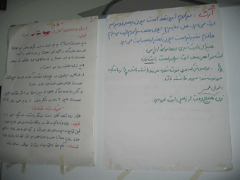
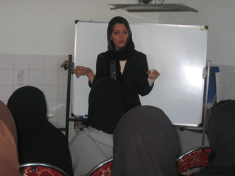
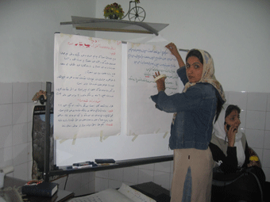

پذيرش > تریبون > گزارش كمپين > كمپين يك مليون امضا به يزد هم رسيد


 كمپين يك مليون امضا به يزد هم رسيد كمپين يك مليون امضا به يزد هم رسيد
11 آذر 1385 - مریم حسین خواه - نسخه قابل چاپ
همه کارگاه هاي آموزشي يك برنامه ثابت دارند:ابتدا کليات طرح کمپين يک ميليون امضا براي تغيير قوانين تبعيض آميز براي داوطلبان معرفي مي شود. سپس يك حقوق دان نابرابري هاي حقوقي در حوزه زنان را توضيح مي دهد و به سوالتي كه در اين زمينه مطرح مي شود پاسخ مي دهد و پس از ان نيز يكي از اعضاي گروه آموزش روش كار چهره به چهره را براي آشنايي با نحوه برخورد با زنان هنگام جمع آوري امضا آموزش مي دهد.

اين اما همه ماجرا نيست و هر شهر و هر كارگاه ماجراي خودش را دارد.
براي كارگاه يزد يك تيم شش نفره راهي اين شهر شد. يك وكيل براي آموزش هاي حقوقي:زهره ارزني؛ يك تسهيلگر براي آموزش چهره به چهره و معرفي طرح:سارا لقماني؛ يك نفر از كميته مالي: ناهيد جعفري؛ دو نفر از كميته داوطلبان براي هماهنگ كردن برگزاري كارگاه و ارتباط گرفتن با داوطلبان يزدي: جلوه جواهري و زارا امجديان و يك نفر از كميته رسانه براي پوشش خبري كارگاه: مريم حسين خواه.
زمان برگزاري كارگاه ساعت 2 بعد از ظهر روز پنجشنبه بود و تيم آموزشي چهارشنبه شب با قطار راهي يزد شد. طبق قراري كه از همان روزهاي اول گذاشته ايم، هزينه هاي سفر را هركس خودش پرداخت مي كند. سفرهايمان هم زياد پر خرج نيستند. معمولا با اتوبوس و قطار مي رويم و اغلب يك روزه. براي همين جاي خواب هم نمي خواهيم، چون شبها را مهمان تخت هاي قطار و صندلي هاي اتوبوس هستيم. اگر هم مجبور باشيم شب بمانيم ، مهمان يكي از فعالان آن شهر مي شويم . از طرف ديگر سفرها دوره اي هستند و برنامه طوري تنظيم مي شود كه هر دفعه يك سري از اعضاي كمپين به شهرستان بروند.هم به خاطر صرفه جويي در وقت و هزينه ها و هم براي اينكه اين سفرها و ارتباط نزديك با فعالان نقاط مختلف تجربه اي گرانبها است كه بايد همگي از آن بهره ببريم
برنامه يزد هم همينطور بود. ساعت 10 شب از تهران حركت كرديم و 7 صبح يزد بوديم.اين سفر چند ساعته فرصتي بود كه هم درباره كمپين حرف بزنيم و هم به يك راه جديد براي جمع آوري امضا فكر كنيم: سفر هاي كوتاه با قطار و جمع كردن امضا در كوپه ها. هر چند اين بار به خاطر فشرده و كوتاه بودن برنامه سفر و نداشتن دفترچه آموزشي به اندازه كافي موفق به تجربه كردن ايده مان نشديم.
كارگاه ساعت 2بعد از ظهر شروع مي شد و ما چند ساعتي وقت داشتيم كه يزد را ببينيم و امضا جمع كنيم. اين زمان هاي بين كارگاه ها شايد يكي از آن فرصت هاي نابي باشد كه كمپين در اختيار ما مي گذارد. فرصتي براي اينكه در خيابان ها و كوچه پس كوچه هاي شهرهاي مختلف كشورمان بگرديم. با مردم حرف بزنيم و از آنان بخواهيم بيانيه اعتراض به قوانين نابرابر را امضا كنند.
اين شايد همان رويايي باشد كه سالها در سر داشتيم و به نظرمان دور و حتي دست نيافتني مي آمد. همه ما مي دانستيم كه ايران فقط تهران نيست و براي بوجود آوردن تغييرات بايد بذر آگاهي را در گوشه و نقاط كشور پراكند، آن زمان اما به هزينه هاي بالاي اين كار فكر مي كرديم و توان اندك خودمان. حالا اما كمپين بهانه اي شده براي اينكه ميهمان خواهران و برادرمان شويم و چند ساعتي را در كنار يكديگر بگوييم و بشنويم و از هم ياد بگيريم.

چند ساعت وقت آزاد ما در يزد هم فرصتي دست داد تا همراه دوستان يزدي، هم شهر را ببينيم و هم با چند نفري صحبت كنيم. بهترين بخش اين تجربه هم وقتي بود كه در يك خانه قديمي و سنتي يزد كه حالا هتل شده است، بند و بساط امضا را بيرون آورديم و از زني كه مديريت هتل را بر عهده داشت امضا گرفتيم.چند نفري كه با يك تور دانشجويي آمده بودند صحبت هاي ما راشنيدند و وارد بحث شدند و پس از چند دقيقه تمام آدم هايي كه در حياط هتل بودند درباره كمپين و قوانين نابرابر بحث مي كردند. كار آنقدر خوب پيش رفت كه چند نفر شماره هاي تماسشان را دادند و داوطلب جمع آوري امضا شدند و مردي هم كه مدير يك موسسه آموزش در تهران بود قول داد تالار اجتماعاتش را براي برگزاري سمينار در اختيار كمپين بگذارد.

زني كه در قهوه خانه سنتي كار مي كرد. كاركنان يك هتل ديگر هم بيانيه را امضا كردند. مثل هميشه بعضي ها هم هم مثل سر آشپزي كه ناهار را مهمانش بوديم، دفترچه را گرفتند و بيانيه را هم خواندند اما امضا نكردند و گفتند با اينكه همه حرف هاي شما را قبول داريم اما اين امضاها فايده اي ندارد. دلمان مي خواست به بازار يزد برويم و كمي در پارك ها و كوچه هاي پر تردد شهر بگرديم و درباره قوانين با مردم حرف بزنيم اما فرصتي نبود و بايد خودمان را براي برگزاري كارگاه آماده مي كرديم.

كارگاه يزد در يك مغازه كوچك بود. مغازه اي كه صاحبش براي چند ساعت آن را در اختيار كمپين گذاشته بود و بچه هاي يزد با كرايه 20 صندلي و آوردن يك تخته سفيد آن را براي برگزاري كارگاه آماده كرده بودند.

شركت كنندكان در كارگاه هم كه به همت جمعی از فعالان اجتماعی شهر یزد، دور هم جمع شده بودند از همه قشر و سني بودند. از دختران و پسران جوان دانشجو گرفته تا استاد دانشگاه و معلم و كارآموزان وكالت و زن هاي خانه دار. در همدان و تبريز و گرگان و يزد بار اصلي هماهنگي افراد براي شركت در كارگاه آموزشي به دوش سازمان هاي غيردولتي زنان بوده و شركت كنندگان نيز اغلب اعضاي فعال اين تشكل ها بودند. در يزد اما به دليل فعال نبودن تشكل هاي يزد اين گروه با شيوه اي متفاوت شكل گرفته بود. با ارتباط چهره به چهره با فعالان اجتماعي شهر و حساس كردن آنها به نابرابري هاي حقوقي و در نهايت جلب موافقت و همكاري آنها براي راه اندازي كمپين يك ميليون امضا در يزد.

كارگاه مثل هميشه با معرفي كمپين از سوي "سارا لقماني" شروع شد. او درباره انگيزه هاي شكل گرفتن اين حركت گفت و تاكيى كرد: " كمپين مي خواهد نشان دهد جنبش مستقل و حقطلب زنان تنها محدود به چند هزار زن نيست و بسياري از زنان ايرانزمين از هر طبقه، قوميت، تحصيلات و سن و سالي که باشند با يک قانون واحد تبعيضآميز مواجهاند."

سپس زهره ارزني، نابرابري هاي حقوقي در حوزه زنان را به تفصيل توضيح داد. او از قوانين ازدواج گفت و اينكه ازدواج چه محدوديت ها و دستاوردهايي برا زنان دارد. از طلاق گفت كه بر اساسقوانين ما حق مسلم مردان است و قوانين ناعادلانه اي كه با نفي سرپرست زنان بر فرزندانشان ، مادران را زير پاي خود له مي كنند.
ارزني در ادامه به تشريح قوانين مبوط به تعدد ازدواج پرداخت و شرح داد كه چگونه اين قانوني كه 4 زن عقدي و بي نهايت زن صيغه اي را براي مردان مجاز مي داند، به قانوني به نفع اشتهاي سيري ناپذير مردان تبديل شده است.
نابرابري هاي موجود در قوانين مربوط به سن مسئوليت كيفري، ديه، شهادت، قضاوت، ارث و قتل هاي ناموسي از ديگر مباحث مطرح شده از سوي اين وكيل دادگستري بود.

در ادامه كارگاه "ناهيد جعفري" كه به نمايندگي از كميته مالي در اين كارگاه شركت كرده بود، از روش هاي تامين منابع در كمپين گفت و اينكه چگونه با اتكا به كمك هاي اعضاي كمپين و مردم علاقمند به اين حركت موفق به چاپ دفترچه ها و تامين ديگر هزينه هاي اين كار شده ايم.

پس از بحث و گفت و گو درباره روش ارتباطي چهره به چهره براي جمع آوري امضاها و بررسي روش هاي مختلفي كه در شهر يزد بايد مورد توجه قرار بگيرند. دفترچه هاي آموزشي بين حاضرين در كارگاه پخش شد. بر اساا روال هميشگي به هر داوطلب 20 دفترچه و چند فرم جمع آوري امضا شد و قرار شد داوطلبان با تشكيل يك ساختار كوچك كار جمع آوري امضا را در يزد آغاز كنند.

براي شكل دادن به اين ساختار هم زارا امجديان و جلوه جواهري از تجربه هاي كميته داوطلبان گفتند و اينكه چطور مي توان نيروهاي جديد را جذب كمپين كردو نيروهاي فعال را سازمان دهي كرد.

كارگاه با دادن شماره هاي تماس و برنامه ريزي براي يك همكاري مستمر و بلند مدت به پايان رسيد. با اميد به اينكه گردهم آمدن اين گروه كوچك، آغازي باشد براي حركت هاي هدفمند و سازماندهي شده در يزد و شايد هم نقطه شروعي براي شكل گيري سازمان هاي غيردولتي زنان.
ارسال به
بالاترین
،
توییتر
،
فریندفید
،
فیسبوک
در همين بخش :
 دهمین دورۀ مراسم تندیس صدیقه دولت آبادی ۱۳۹۲ دهمین دورۀ مراسم تندیس صدیقه دولت آبادی ۱۳۹۲
کارت پستالهایی به بهانهی هشت مارس و به یاد همهی مبارزین راه برابری
بیانیه بیش از 350 تن از مدافعان حقوق زنان به مناسبت روز جهانی زن؛ زنان هر روز فرودستتر میشوند
لباسی که برای تن ما دوخته اند! /اعظم بهرامی
چالشها و چشمانداز فعالیت مدنی زنان
ديگر بخش ها :
طرح یک میلیون امضا
|
مقالات
|
سایت نوشته ها
|
اخبار
|
گزارش كمپين
|
گفت و گو
|
علیه سکوت
|
كوچه به كوچه
|
نامه های شما
|
گزارش ویژه
|
گفتگو با اعضا
|
ویژه سالگرد کمپین
|
تصویر برابری
|
دل آرام علی
|
تریبون
|
مقالات
|
تاریخ شفاهی
|
خارج از چارچوب
|
کتابخانه
|
درباره کمپین
|
کمپین در شهرها
|
کمپین در بند
|
صدای تغییر
|
ویژه 22 خرداد
|
لایحه حمایت از خانواده
|
گالری
|
عشا مومنی
|
امیر یعقوبعلی
|
خدیجه مقدم
|
راحله عسگری زاده و نسیم خسروی
|
پروین اردلان،جلوه جواهری، مریم حسین خواه، ناهید کشاورز
|
زینب پیغمبرزاده
|
سعیده امین، سارا ایمانیان، محبوبه حسین زاده، ناهید کشاورز و همایون نامی
|
احترام شادفر
|
نسیم سرابندی زاده،فاطمه دهدشتی
|
وبلاگ مهمان
|
پرونده خرم آباد
|
دستگیری ها
|
مریم مالک
|
پرستو اللهیاری
|
مهرنوش اعتمادی
|
سمیه رشیدی
|
Other Languages
|
همراهان
|
«فراخوان کمپین ده روز با بهاره هدایت»
| English
|